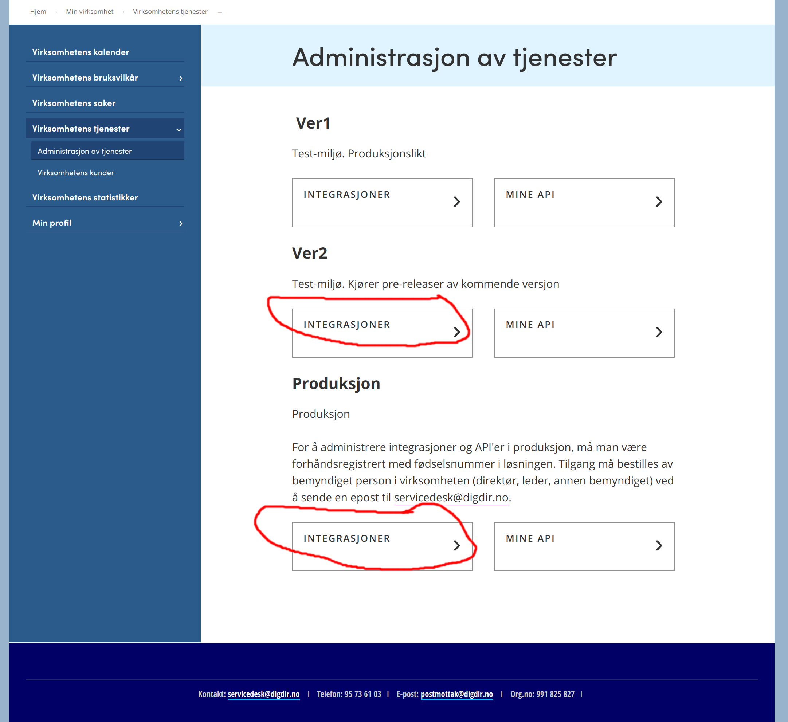
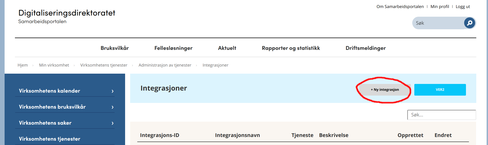
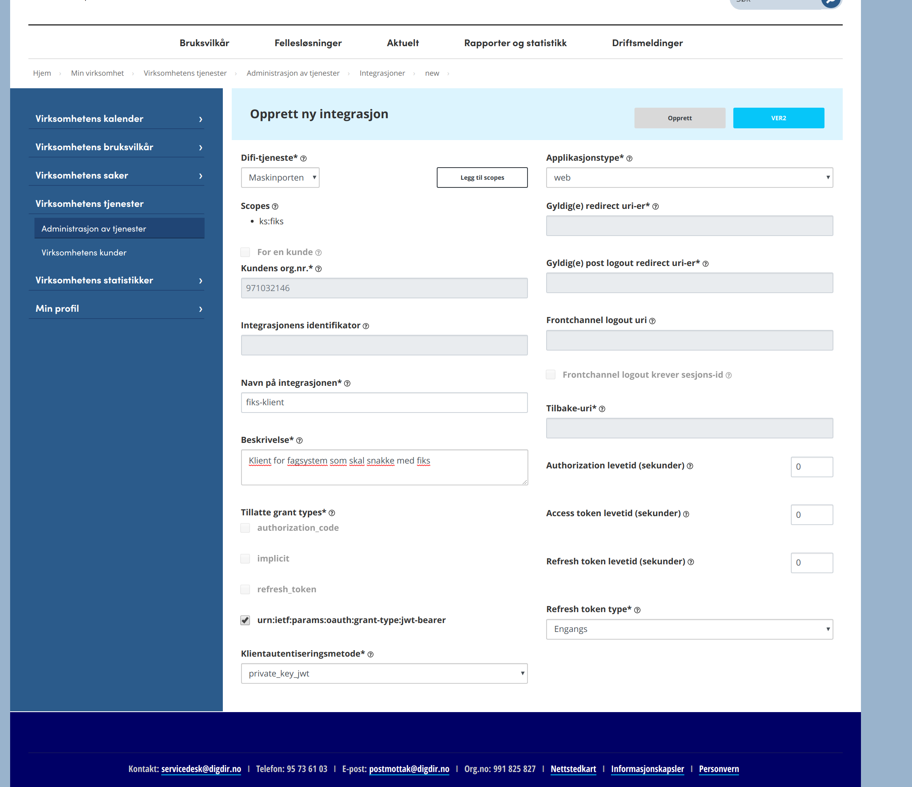
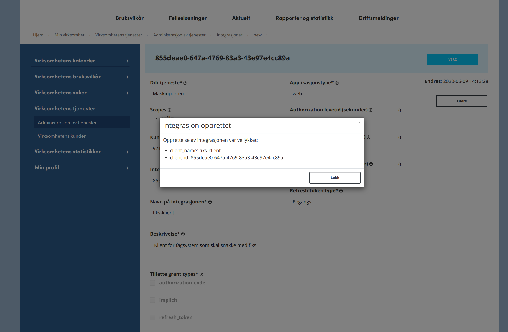

For å ta i bruk maskinporten må man gjøre følgende:
Les videre for beskrivelser om hvordan man kan få dette på plass.
En må først ha godkjent bruksvilkår hos Digdir. Det har de fleste kommuner: https://samarbeid.digdir.no/digital-postkasse/bruksvilkar-offentlige-kunder/70
Man må ha virksomhetsertifikat fra Commfides eller Buypass. Test sertifikat for test og vanlig for produksjon. Husk å registrere virksomhetssertifikat med samme organisasjonsnummer som man vil bruke hos maskinporten og eventuelt tjenster hos KS som f.eks. Fiks-Protokoll og Fiks-IO.
Husk å sende e-post til fiks-utvikling@ks.no med organisasjonsnummeret. Det er mulig å fullføre opprettelsen av maskinport-klient uten at dette er på plass, men det må etterregistreres for å få klienten til å virke på Fiks-plattformen.
Logg inn
Velg “Gå til integrasjoner”, for ver2 for test. Produksjon for prod. 
velg “Ny integrasjon” 
Sett Integrasjon for: for egen virksomhet -> integrasjonstype = maskinporten, -> velg scopes, Der skal du se ks:fiks i lista.
client_name: til et navn som passer
Digdir-tjeneste: Maskinporten (for personinnlogging må du kontakte idporten@difi.no)
legg til scopes: ks:fiks ( Vises ikke dette har vi ikke fått korrekt org.nr fra dere, send det til fiks-utvikling@ks.no)
grant_types: urn:ietf:params:oauth:grant-type:jwt-bearer må være valgt
token_endpoint_auth_method: private_key_jwt 
lagre -> Da får du client_id. 
Hvis du skal ha personinnlogging med ks:fiks scope må du sende en henvendelse til servicedesk@digdir.no